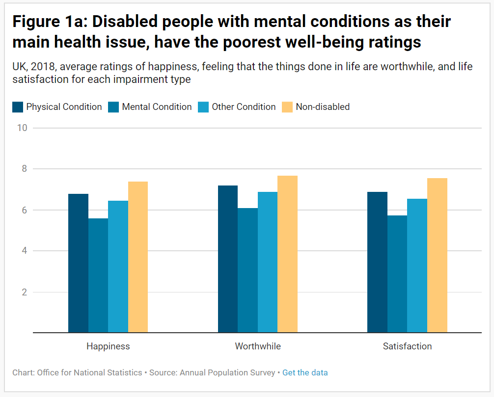
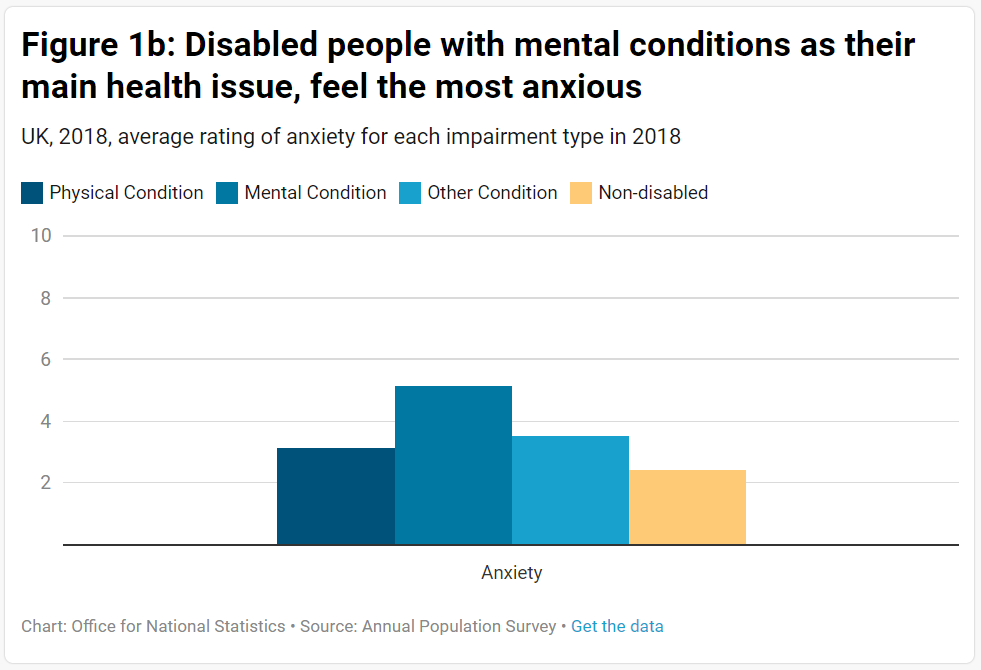
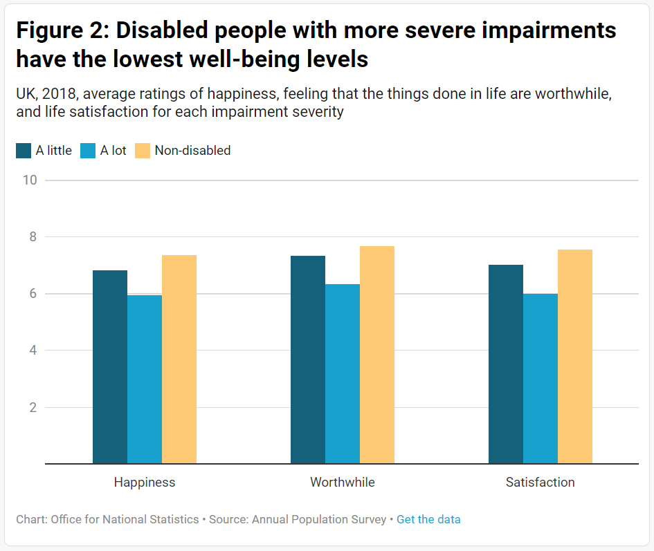
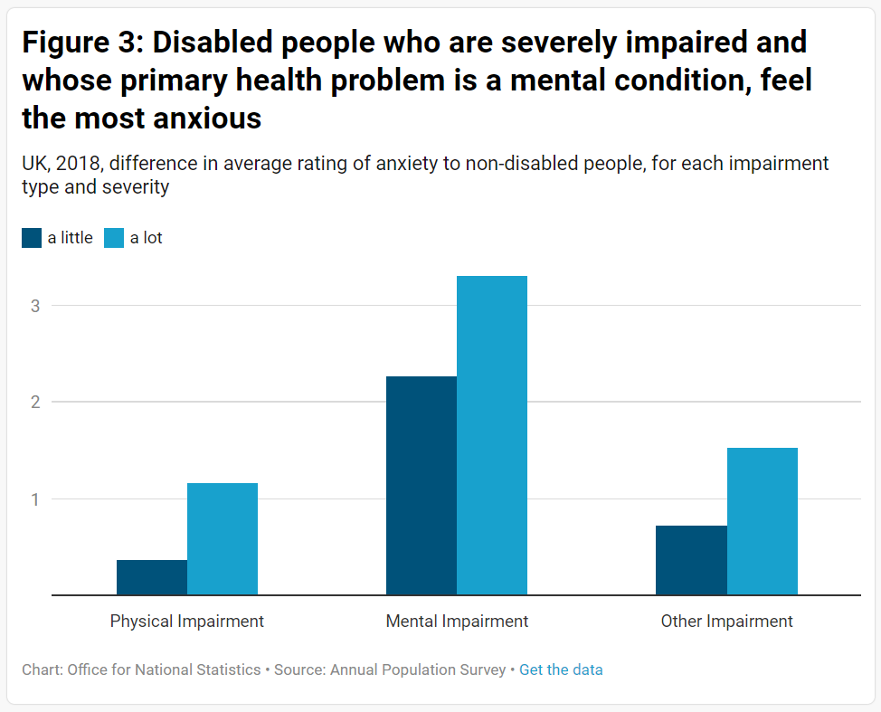
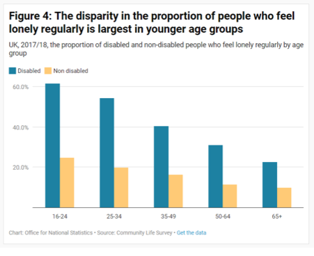

1. Main points
- Average life satisfaction, worthwhile, and happiness ratings are lower for disabled people than non-disabled people.
- Average anxiety ratings are higher for disabled people, indicating that they also feel more anxious than those without a disability.
- Compared to non-disabled people, a higher percentage of disabled people feel lonely regularly.
- Compared to those whose disability is a physical or “other” impairment, those with a mental impairment have the poorest average well-being ratings.
- Disabled people with more severe impairments have poorer well-being ratings than those with less severe impairments.
2. Analysis
Well-being disparities
Disabled people report lower well-being levels than non-disabled people
The average (mean) ratings across the four measures of personal well-being in the year 2018 were:
- 6.5 out of 10 for disabled people, compared to 7.4 for non-disabled people, for happiness yesterday
- 6.9 out of 10 for disabled people, compared to 7.7 for non-disabled people, for feeling that the things done in life are worthwhile
- 6.6 out of 10 for disabled people, compared to 7.6 for non-disabled people, for life satisfaction
- 3.6 out of 10 for disabled people, compared to 2.4 for non-disabled people, for anxiety yesterday (higher numbers equate to poorer well-being in this measure)
Between the years 2014 and 2018, all four well-being measures remained stable for both disabled and non-disabled people.
Loneliness disparities
A higher percentage of disabled people feel lonely compared to non-disabled people
The proportion of disabled people who feel lonely regularly is more than two times that of non-disabled people. In the year ending March 2018, 34.6% of disabled people reported that they felt lonely regularly, this compares to only 16.0% for non-disabled people.
Between the years 2013 to 2014 and 2017 to 2018, the proportion of disabled people who reported feeling lonely regularly increased by 3.0 percentage points, despite the figure for non-disabled people falling by 0.5 percentage points.
3. Well-being data
Impairment type breakdowns
Well-being levels are lowest in disabled people whose main health problem is a mental condition
 The average well-being levels of disabled people varies with impairment type. Whilst the average rating for each well-being measure was poorer for disabled people in all impairment types (physical, mental or “other”), well-being measures were notably poor for those with a mental condition as their main health problem.
Impairment severity breakdowns
Lower well-being levels are seen in disabled people with more severe impairments
Disabled people with a condition that impairs their ability to complete daily activities “a lot” have poorer well-being ratings in all four measures, than those whose condition impairs this ability “a little”.
This effect is also seen in loneliness, where a much higher proportion of people with severe impairments feel lonely regularly, compared to those with less severe impairments. 44.4% of those who are impaired “a lot” feel lonely regularly, compared to 30.2% of those impaired “a little” and 16.0% of those without a disability.
Breakdowns by impairment type and severity
The lowest well-being levels are seen in disabled people with a severe impairment and a mental condition as a main health problem
Those with all impairment types (physical, mental or other) have poorer well-being ratings when their impairment is more severe.
Disabled people whose primary health problem is a mental condition and whose ability to carry out day-to-day activities is impaired “a lot” by their condition, have the lowest well-being scores on all measures. The greatest disparity is seen in anxiety ratings, where those who are severely impaired and whose main health problem is a mental condition have an average rating of 5.7, compared to 2.4 for non-disabled people.
Age breakdowns
The largest disparity in the proportion of people who feel lonely regularly, between disabled and non-disabled people, is seen in those aged 16-24
Loneliness is highest in the younger age groups (as previous research has shown) for both disabled and non-disabled people; 61.4% of disabled 16-24 year olds feel lonely regularly, compared to 24.8% of non-disabled people in the same age group.
The percentage of people who feel lonely regularly then decreases with age for both disabled and non-disabled people, with the lowest proportion of people who feel lonely in the 65+ age groups. The disparity between disabled and non-disabled people in the proportion of people who feel lonely regularly also decreases with age, from 36.6 percentage points in the 16-24 age group to 12.7 percentage points in the 65+ age group.
Disparities in the average ratings on the four well-being measures, between disabled and non-disabled people, are relatively consistent across all age groups.
Gender breakdowns
There are no major differences between men and women in the disparities for well-being ratings of disabled and non-disabled people
Despite a general trend of higher happiness, worthwhile and life satisfaction ratings in women for both disabled and non-disabled people, the disparities between disabled and non-disabled people are consistent for men and women in these measures.
The trend is reversed when looking at anxiety and loneliness, with higher anxiety ratings and proportions of people who feel lonely regularly seen in both disabled and non-disabled women in comparison to male counterparts. However, the disparities between disabled and non-disabled people are also consistent for men and women in these areas.
Breakdowns by country
There is a bigger disparity in the average anxiety ratings for disabled and non-disabled people in Scotland than that in England
Disparities in the average happiness, worthwhile and life satisfaction ratings for disabled and non-disabled people are relatively consistent across the four UK countries.
However, there appears to be differences between the four countries in the disparities for the average anxiety ratings of disabled and non-disabled people. Disabled people in Scotland average 1.6 less on anxiety ratings than non-disabled people, this compares to a disparity of 1.1 in England. The disparity in average anxiety ratings are 1.3 in Wales and 1.4 in Northern Ireland.
Disability and well-being data
Well-being data
Mean well-being ratings for disabled and non-disabled people Disability and well-being | Released 3rd December 2019
Tables and charts for average well-being ratings of disabled and non-disabled people in the UK, with breakdowns of year, impairment type, impairment severity, age, sex and country.
Loneliness data
Proportion of people who feel lonely regularly for disabled and non-disabled people Disability and loneliness | Released 3rdDecember 2019 Tables and charts for the proportion of disabled and non-disabled people in England and Wales who feel lonely regularly, with breakdowns of year, impairment severity, age and sex.
4. Glossary
The Equality Act (2010)
In this bulletin, disability is defined by The Equality Act (2010). This states a person has a physical or mental health condition or illness that has lasted or is expected to last 12 months or more that reduces their ability to carry-out day-to-day activities.
Loneliness
Those who feel lonely regularly refers to those who reported feeling lonely either “some of the time” or “often/always”.
Impairment type
The health problem reported by a disabled person as their “main health problem”.
- Those whose impairment is classified as a mental condition selected “depression, bad nerves or anxiety”, “epilepsy”, “learning difficulties” or “mental illness or nervous disorder”.
- Those whose impairment is classified as physical selected “problems with arms or hands”, "problems with legs or feet”, “problems with back or neck", "difficulty in seeing", "difficulty in hearing", “speech impediment", "skin conditions or allergies", "chest or breathing problems” "heart, blood pressure, or blood circulation problems", "stomach, liver, kidney or digestion" or "diabetes".
- Those whose impairment whose impairment is classified as “other condition” selected “progressive illness not included elsewhere” or “other health problems or disabilities”.
5. Measuring the data
The Annual Population Survey is a household survey of approximately 250,000 individuals, covering UK. The survey does not cover student accommodation. Analysis using the APS in this bulletin looks at the working age population only (16-64 year olds). Data is collected between January and December of each year.
The Community Life Survey is a household self-completion survey of approximately 10,000 adults aged 16+ in England. The survey can be completed either in a paper or online format; the question regarding disability status is asked online only. Data for the 2017 to 2018 year was collected between August 2017 and March 2018.
6. Strengths and limitations
Well-being
The Personal well-being in the UK Quality and Methodology Information report contains important information on the strengths and limitations and uses of the data as well as how outputs are created and the quality and accuracy of those outputs. For more information on personal well-being, please see the Personal well-being user guidance and Harmonised principles of personal well-being.
Loneliness
Loneliness proportions were calculated using the Community Life Survey which is used in England only.
To improve statistical quality of our analysis, those who reported feeling lonely “often/always” or “sometimes” or” are classified as “feels lonely regularly” whilst those who reported “occasionally”, “hardly ever” or “never” feeling lonely are classified as “does not feel lonely regularly”.